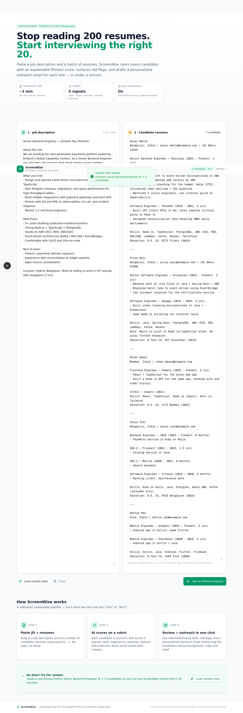
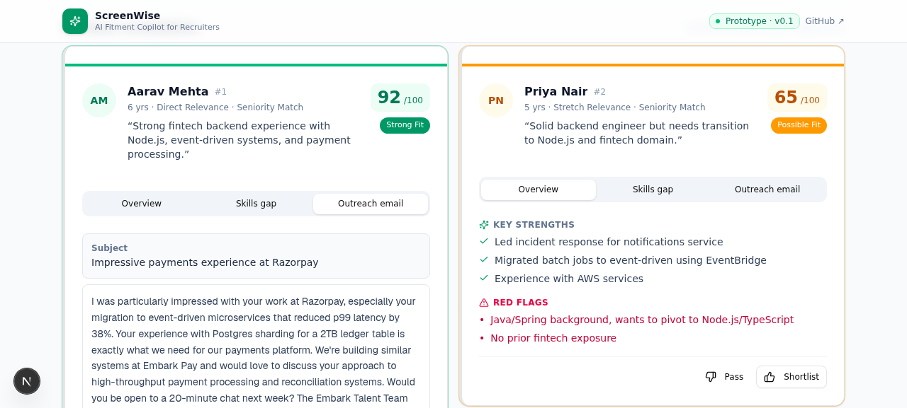

Built in ~5 hours. End-to-end working. Try it live.
I kept the UI utilitarian on purpose — the assignment values execution over polish, so I spent the hours on AI calibration and validated metrics, not animations.
INPUT —paste JD + resumes

RANKED RESULTS —explained scores

OUTREACH —personalized per candidate

Sample run: Senior Backend Engineer JD (fintech) + 5 candidate resumes. AI correctly flagged the 6-yr Node.js+Postgres+fintech engineer as Strong Fit, and surfaced the 4-jobs-in-4-years pattern as a red flag on another.
play_circle
Try it
play_circle
Live prototype:
Preview Panel → / route (this app)
code
GitHub repo:
github.com/screenwise-ai/screenwise
layers
Stack
Next.js 16 (App Router) · TypeScript · Tailwind CSS · shadcn/ui · framer-motion · z-ai-web-dev-sdk (server-side, Node runtime). No database — stateless prototype. No external services beyond the LLM.
Next.js 16
TypeScript
Tailwind
shadcn/ui
framer-motion
z-ai-web-dev-sdk
Production security
GDPR-compliant data handling · PII masking before LLM call · role-based access control · resume encryption at rest · audit logging of every screening decision.